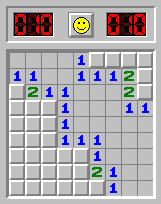
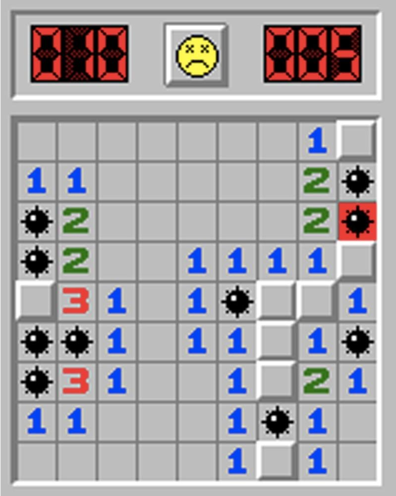

Cómo se juega
El juego consiste en despejar todas las casillas del tablero sin detonar ninguna mina.
Al principio del juego, se debe hacer click en cualquier casilla del tablero aleatoriamente. En ese momento se despejarán algunas casillas con una serie de números y espacios en blancos.
Los números de las casillas indican la cantidad de minas que hay en las posiciones adyacentes.
El botón izquierdo del ratón sirve para ir despejando los cuadrados que creas que no tengan minas.
El boton derecho del ratón sirve para marcar con una bandera los cudrados que pienses que contienen minas.

Por tanto se trata de, a partir de la información proporcionada por los números, ir deduciendo dónde se encuentras las minas.
El juego terminará cuando se despejen todas las casillas o se de click por error en una casilla con una mina, como podemos observar en la imagen a continuación.
